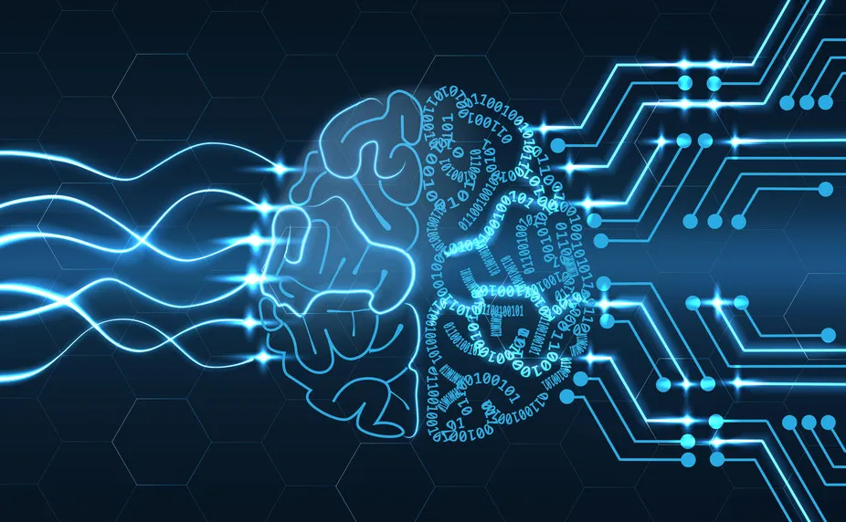
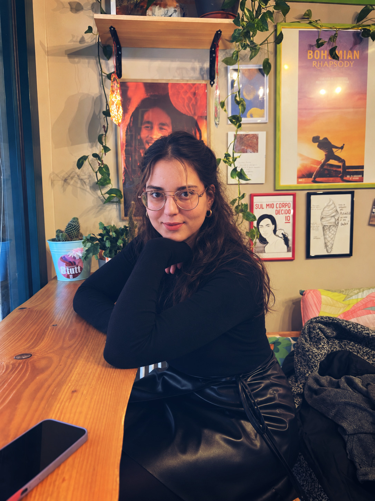
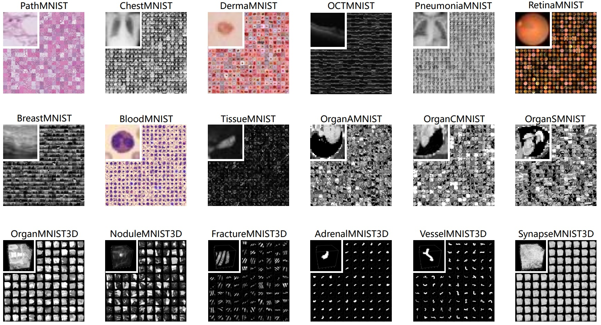
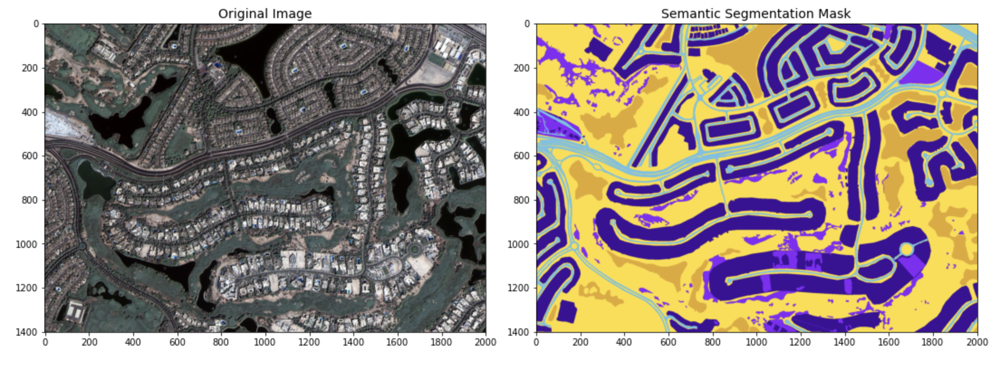
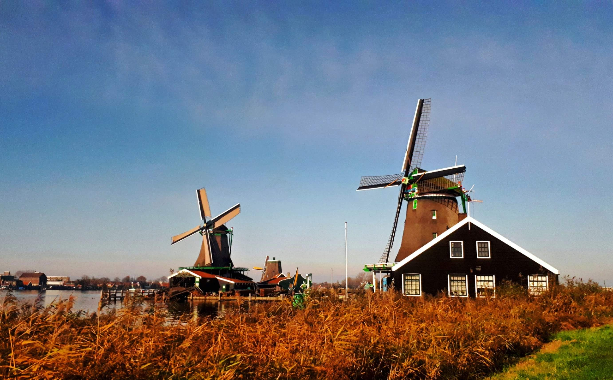

01 TRANSFORMERS
MiniLM Deception Detection
Compared LoRA and transfer-learning approaches for deceptive-text classification, exploring model configurations, hyperparameters and evaluation strategies.
View repositoryBARCELONA · MACHINE LEARNING ENGINEER
I'm Işıkay Karakuş, an ML Engineer with a background in mathematics and data science. I bring mathematical curiosity to deep learning, NLP and the craft of building useful ML systems.

01 / SELECTED WORK
From parameter-efficient fine-tuning and computer vision to deployed NLP applications and symbolic reasoning.

Compared LoRA and transfer-learning approaches for deceptive-text classification, exploring model configurations, hyperparameters and evaluation strategies.
View repository
Evaluated neural architectures for blood-cell classification, comparing predictive performance, model complexity, memory footprint and inference efficiency.
View repository
Explored pixel-wise semantic segmentation of aerial imagery with deep-learning models and class-level evaluation.
View repositoryBuilt a Turkish text emotion classifier using a logistic-regression baseline and the TREMO dataset, from preprocessing and feature extraction to a Streamlit application.
Try live demo ↗Modeled Minesweeper clues as logical constraints and used the MiniSat22 SAT solver to infer whether hidden cells contain mines or are safe.
View repository02 / EXPERIENCE
Research-driven model development, experimentation and engineering.
IREC · Barcelona, Spain
Forecasting workflows for energy systems, data pipelines, model benchmarking and ML services using FastAPI, PostgreSQL and Docker for Linux-based deployment.
FOREO · Stockholm, Sweden
Multilingual ML application spanning translation, speech and OCR; LoRA-based model adaptation, evaluation and API integration.
University of Padova · Italy
Benchmarked statistical, ML and deep-learning models for battery electric vehicle adoption forecasting.
03 / ABOUT
I hold an MSc in Data Science from the University of Padova and a BSc in Mathematics from Hacettepe University. I enjoy exploring how mathematical thinking and careful experimentation can lead to better machine-learning systems.
My interests include efficient ML, Transformer models, NLP, comparative evaluation and turning research ideas into useful applications.
04 / BEYOND THE SCREEN
Outside machine learning, I enjoy travel and photography—finding interesting details in unfamiliar places and everyday scenes.
Travel & photography on Instagram
05 / CONTACT
Interested in ML engineering, applied research and efficient AI.